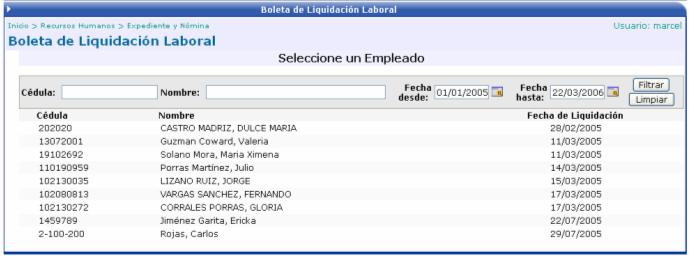
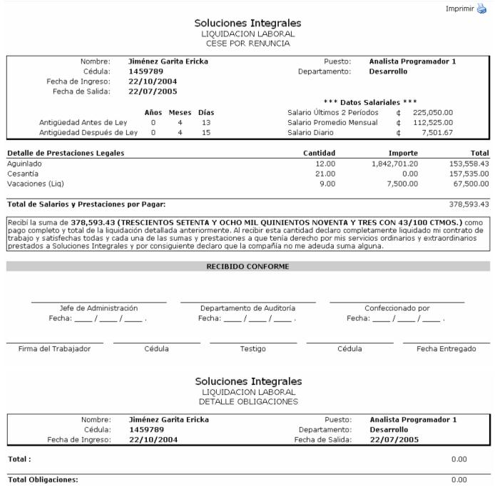

Aquí se muestra la lista de los empleados que en la opción anterior (Confección de la Liquidación) se les aprobó la liquidación. Se debe de seleccionar uno para imprimir la boleta de liquidación:

Una vez seleccionado el empleado, se muestra el siguiente reporte, donde se detalla, en una boleta lo que corresponde directamente a la liquidación que serían los ingresos y las provisiones y en otra boleta lo que corresponde al detalle de las deducciones:
